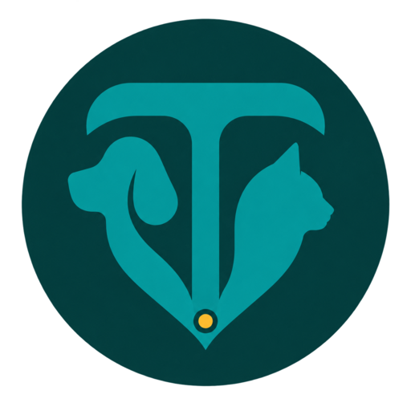

Advanced private-clinic operations
Clinical care, surgery, POS, purchasing, inventory, billing, and management reporting in one dependable system.

TalaVet brings veterinary records, vaccination programs, inventory, field operations, billing, and reporting into one configurable workspace—purpose-built for private clinics and Philippine local government veterinary services.
Clinical care, surgery, POS, purchasing, inventory, billing, and management reporting in one dependable system.
Companion animals, livestock, mass vaccination, disease surveillance, permits, inspections, and barangay-level reporting.
Teams can find information quickly, record care consistently, monitor supplies, issue documents, and understand operations without maintaining disconnected paper logs and spreadsheets.
Detailed profiles, contacts, species and breed data, identification, photographs, ownership history, and fast cross-record search.
SOAP consultations, diagnoses, treatments, prescriptions, attachments, vital signs, procedures, and longitudinal patient history.
Per-animal vaccine history, schedules, reminders, product and batch traceability, next-dose dates, and branded owner copies.
Clinic schedules, visit status, follow-up tasks, due lists, and a clear daily view for reception and veterinary staff.
Reusable certificate templates, custom logos and wording, organization details, serial references, and print-ready output.
Locate a pet by animal name or owner name, then move directly into the correct patient, visit, vaccine, or transaction record.
Upload an existing photo or capture one from an attached camera to make records easier to verify in clinic or in the field.
Track medicines, vaccines, consumables, stock movements, lot numbers, expiry dates, reorder levels, and usage.
Filterable summaries for visits, vaccinations, inventory, revenue, barangays, livestock, programs, and management review.
Both editions use the same configurable core and brand system. Modules, terminology, permissions, and workflows are enabled around the organization—not forced into a one-size-fits-all setup.
A complete clinical and business operating system for growing veterinary clinics and hospitals.
A configurable public-service platform for animal health programs from the office to the barangay.
TalaVet’s offline-capable field workflow is designed for intermittent connectivity. Saved records remain on the device until the network is available and the team can synchronize with the main server.
Record the owner or keeper, address, animal details, consent, and a field photograph.
Select the campaign, vaccine, batch, vaccinator, date, and barangay while work continues offline.
When the device reconnects to the office network, pending records upload to the central TalaVet database.
Possible duplicate owners or animals are reviewed and safely merged into a single trusted profile.
Administrators can tailor the system without maintaining separate codebases. TalaVet supports controlled access, accountable records, configurable identity, and operational safeguards for sensitive veterinary and personal data.
Plan your configurationEnable only the services the organization delivers and adapt labels for local programs, animal categories, and staff workflows.
Assign access by responsibility—administrator, veterinarian, receptionist, cashier, inventory manager, LGU coordinator, field inspector, livestock officer, or encoder.
Use the TalaVet mark by default or upload the clinic or LGU logo for the system, vaccine card, certificates, invoices, and reports.
Privacy notices, purpose-limited access, consent records, audit trails, data-subject workflow support, backups, and BIR-oriented invoice configuration help organizations operate responsibly.
TalaVet can run on an office computer or local server and be accessed through modern browsers over a controlled LAN. Deployment, backup, security policy, and field-device setup are configured for each organization.
Desktop, laptop, tablet, and phone access with no separate desktop client required.
Suitable for on-premise environments, including common Windows-based clinic setups.
Documented database and uploaded-file backup procedures support recoverability.
Separate Enterprise and LGU user guides, configuration guidance, and implementation support.
Compliance note: TalaVet provides technical controls and configurable records that can support Philippine privacy and tax-compliance workflows. Legal compliance also depends on the organization’s policies, registrations, notices, security practices, staff training, and professional advice; the software is not presented as government certification or legal advice.